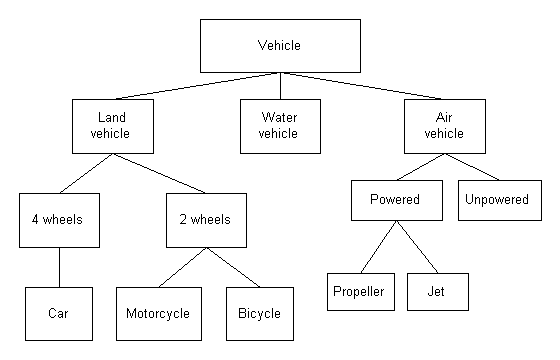
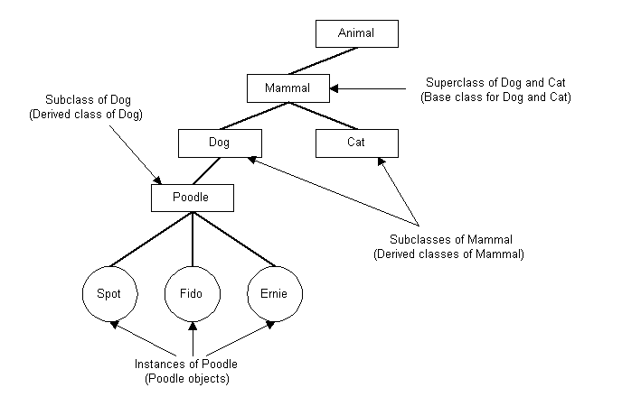
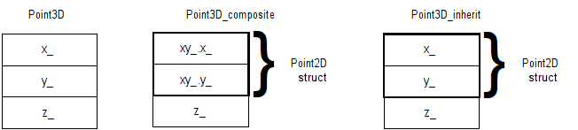
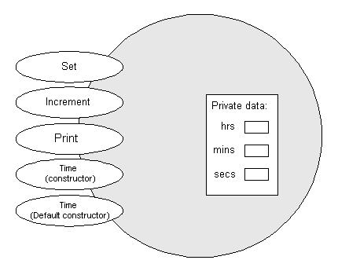
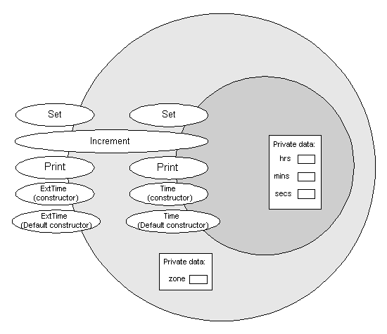
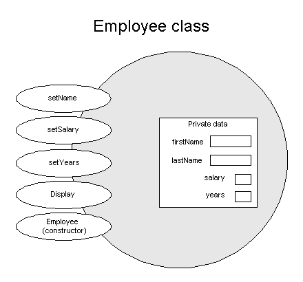
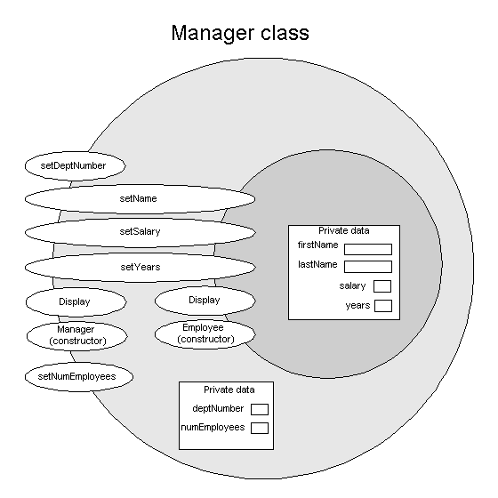

Object-Oriented Programming
Inheritance is one of the three pillars of Object Oriented Programming:You've already seen encapsulation (classes). Now we will look at extending a class via inheritance.
Other OO languages may use slightly different terminology than C++. Here are some equivalents:
OOP C++ Object Class object or instance Instance variable Private data member Method Public member function Message passing Calling a public member function
Within a class, all of the data and functions are related. Within a program, classes can be related in various ways.
An inheritance relationship can be represented by a hierarchy.
A partial vehicle hierarchy:

A partial animal hierarchy:

A Simple Example
Structures to represent 2D and 3D points:
|
|
Another way to define the 3D struct so that we can reuse the Point2D struct:
struct Point3D_composite
{
Point2D xy_; // Struct contains a Point2D object
double z_;
};
Accessing the members:
void PrintXY(const Point2D &pt)
{
std::cout << pt.x_ << ", " << pt.y_;
}
void PrintXYZ(const Point3D &pt)
{
std::cout << pt.x_ << ", " << pt.y_ << ", " << pt.z_;
}
void PrintXYZ(const Point3D_composite &pt)
{
std::cout << pt.xy_.x_ << ", " << pt.xy_.y_;
std::cout << ", " << pt.z_;
}
void PrintXYZ(const Point3D_composite &pt)
{
PrintXY(pt.xy_); // delegate for X,Y
std::cout << ", " << pt.z_;
}
// Struct inherits a Point2D object
struct Point3D_inherit : public Point2D
{
double z_;
};
|
|
void PrintXYZ(const Point3D_inherit &pt)
{
std::cout << pt.x_ << ", " << pt.y_ << ", " << pt.z_;
}

Sample usage:
int main()
{
Point3D pt3; // 24 bytes
Point3D_composite ptc; // 24 bytes
Point3D_inherit pti; // 24 bytes
char buffer[100]; // scratch buffer
// Displays: pt3: x=0012FF68, y=0012FF70, z=0012FF78
sprintf(buffer, "pt3: x=%p, y=%p, z=%p\n", &pt3.x_, &pt3.y_, &pt3.z_);
std::cout << buffer;
// Displays: ptc: x=0012FF50, y=0012FF58, z=0012FF60
sprintf(buffer, "ptc: x=%p, y=%p, z=%p\n", &ptc.xy_.x_, &ptc.xy_.y_, &ptc.z_);
std::cout << buffer;
// Displays: pti: x=0012FF38, y=0012FF40, z=0012FF48
sprintf(buffer, "pti: x=%p, y=%p, z=%p\n", &pti.x_, &pti.y_, &pti.z_);
std::cout << buffer;
// Assign to Point3D members
pt3.x_ = 1;
pt3.y_ = 2;
pt3.z_ = 3;
PrintXYZ(pt3);
std::cout << std::endl;
// Assign to Point3D_composite members (explicit subobject)
// To access the 2D variables, you must use xy_ by name
ptc.xy_.x_ = 4;
ptc.xy_.y_ = 5;
ptc.z_ = 6;
PrintXYZ(ptc);
std::cout << std::endl;
// Assign to Point3D_inherit members (implicit subobject)
// You can access the 2D variables directly (they are public)
pti.x_ = 7;
pti.y_ = 8;
pti.z_ = 9;
PrintXYZ(pti);
std::cout << std::endl;
return 0;
}Notes about this syntax:pt3: x=0012FF68, y=0012FF70, z=0012FF78 ptc: x=0012FF50, y=0012FF58, z=0012FF60 pti: x=0012FF38, y=0012FF40, z=0012FF48 1, 2, 3 4, 5, 6 7, 8, 9
struct Point3D_inherit : public Point2D
|
|
Composition vs. inheritance (currently, everything is public):
| Composition | Inheritance | |
|---|---|---|
|
|
And in main we would have something that looks like this:
Point3D pt3; Point3D_composite ptc; Point3D_inherit pti; // setup points pt3.print(); ptc.print(); pti.print(); // Is this legal? Ambiguous? Which print method is called? (Hint: Think like a compiler!)
Now that we have the syntax down, let's make it even more C++-like with constructors, private members, and public methods. We'll also use the class keyword instead of struct:
// This class is a stand-alone 2D point
class Point2D
{
public:
Point2D(double x, double y) : x_(x), y_(y) {};
void print()
{
std::cout << x_ << ", " << y_;
}
private:
double x_;
double y_;
};
// This class is a stand-alone 3D point
class Point3D
{
public:
Point3D(double x, double y, double z) : x_(x), y_(y), z_(z) {};
void print()
{
std::cout << x_ << ", " << y_ << ", " << z_;
}
private:
double x_;
double y_;
double z_;
};
// This class contains a Point2D object
struct Point3D_composite
{
public:
Point3D_composite(double x, double y, double z) : xy_(x, y), z_(z) {};
void print()
{
xy_.print(); // 2D members are now private
std::cout << ", " << z_;
}
private:
Point2D xy_;
double z_;
};
// This class inherits a Point2D object
struct Point3D_inherit : public Point2D
{
public:
Point3D_inherit(double x, double y, double z) : Point2D(x ,y), z_(z) {};
void print()
{
Point2D::print(); // 2D members are now private
std::cout << ", " << z_;
}
private:
double z_;
};
We've now come across yet-another situation that requires the use of the member initializer list when initializing members of a class: Base class initialization. This brings the count now to 4: 1) constants, 2) references, 3) user-defined types (composition), and 4) base classes (inheritance).
Sample usage:
int main()
{
// Create Point3D
Point3D pt3(1, 2, 3);
pt3.print();
std::cout << std::endl;
// Create Point3D_composite
Point3D_composite ptc(4, 5, 6);
ptc.print();
std::cout << std::endl;
// Create Point3D_inherit
Point3D_inherit pti(7, 8, 9);
pti.print();
std::cout << std::endl;
return 0;
}Notes:1, 2, 3 4, 5, 6 7, 8, 9
This works because we're using public inheritance. The base class is accessible in the derived class.pti.Point2D::print();
A Larger Example
class Time
{
public:
Time();
Time(int h, int m, int s);
void Set(int h, int m, int s);
void Print() const;
void Increment();
private:
int hrs_;
int mins_;
int secs_;
};

Note that sizeof(Time) is 12 bytes.
Partial implementation from Time.cpp: (Notice the code reuse even in this simple example.)
Time::Time()
{
Set(0, 0, 0);
}
Time::Time(int h, int m, int s)
{
Set(h, m, s);
}
void Time::Set(int h, int m, int s)
{
hrs_ = h;
mins_ = m;
secs_ = s;
}
Note: To keep the examples simple, I'm omitting all of the data validation in the Time class. Normally, you would want to make sure that the values given for hours, minutes, and seconds make sense.
Extending the Time class
Now we decide that we'd like the Time class to include a Time Zone:
enum TimeZone {EST, CST, MST, PST, EDT, CDT, MDT, PDT};
Base class Derived class class Time { public: Time(); Time(int h, int m, int s); void Set(int h, int m, int s); void Print() const; void Increment(); private: int hrs_; int mins_; int secs_; };class ExtTime : public Time { public: ExtTime(); ExtTime(int h, int m, int s, TimeZone z); void Set(int h, int m, int s, TimeZone z); void Print() const; private: TimeZone zone_; };
What is sizeof(ExtTime)? How might it be laid out in memory?
Some implementations of the ExtTime constructors:
The relationship between the Time and ExtTime classes:Notes:
- The derived class default constructor: (the base class default constructor is implicitly called)
ExtTime::ExtTime() { zone_ = EST; // arbitrary default }- The derived class non-default constructor: (the base class default constructor is implicitly called, although this is incorrect behavior)
ExtTime::ExtTime(int h, int m, int s, TimeZone z) { zone_ = z; // what do we do with h, m, and s? }- Initializing the base class explicitly using the non-default constructor:
ExtTime::ExtTime(int h, int m, int s, TimeZone z) : Time(h, m, s) { zone_ = z; }- Same as above using initializer list for derived member initialization:
ExtTime::ExtTime(int h, int m, int s, TimeZone z) : Time(h, m, s), zone_(z) { }
- The derived constructor calls the default base constructor if you don't call it explicitly.
- You can call any base constructor explicitly (only one!) from the member initializer list.
- A base constructor must be called from a derived constructor using the initializer list syntax. This is incorrect:
ExtTime::ExtTime(int h, int m, int s, TimeZone z) { Time(h, m, s); // Can't call a base constructor explicitly (What is this statement actually doing?) zone_ = z; }Key Point: A base constructor must be called, either implicitly or explicitly. If the base class has no default constructor, you must call another one explicitly. (If you don't, the compiler will generate an error.)

In the ExtTime class:
|
|
What is the result of the code below? (What is the type of time? Remember, think like a compiler.)
ExtTime time; time.Set(9, 30, 0); // ??? time.Print();
| Time Implementation | ExtTime Implementation |
|---|---|
|
|
Of course, what happens to the time zone now? In general, you don't want to do this.ExtTime ext; ext.Time::Set(1, 2, 3);
Additional notes:
Another Example of Inheritance
The specification (Employee.h) for an Employee class:#ifndef EMPLOYEE_H
#define EMPLOYEE_H
#include <string>
class Employee
{
public:
Employee(const std::string& first, const std::string& last, float sal, int yrs);
void setName(const std::string& first, const std::string& last);
void setSalary(float newSalary);
void setYears(int numYears);
void Display() const;
private:
std::string firstName_;
std::string lastName_;
float salary_;
int years_;
};
#endif
What is sizeof(Employee)?
What is sizeof(std::string)? (Depends on the implementation)
An implementation (Employee.cpp) for the Employee class:
#include <iostream>
#include <iomanip>
#include "Employee.h"
Employee::Employee(const std::string& first, const std::string& last, float sal, int yrs) : firstName_(first), lastName_(last)
{
salary_ = sal;
years_ = yrs;
}
void Employee::setName(const std::string& first, const std::string& last)
{
firstName_ = first;
lastName_ = last;
}
void Employee::setSalary(float newSalary)
{
salary_ = newSalary;
}
void Employee::setYears(int numYears)
{
years_ = numYears;
}
void Employee::Display() const
{
std::cout << " Name: " << lastName_;
std::cout << ", " << firstName_ << std::endl;
std::cout << std::setprecision(2);
std::cout.setf(std::ios::fixed);
std::cout << "Salary: $" << salary_ << std::endl;
std::cout << " Years: " << years_ << std::endl;
}#ifndef MANAGER_H
#define MANAGER_H
#include "Employee.h"
class Manager : public Employee
{
public:
Manager(const std::string& first, const std::string& last, float sal, int yrs, int dept, int emps);
void setDeptNumber(int dept);
void setNumEmployees(int emps);
void Display() const;
private:
int deptNumber_; // department managed
int numEmployees_; // employees in department
};
#endifA diagram of the Manager class:

What is sizeof(Manager)?
An implementation (Manager.cpp) for the Manager class:
include <iostream>
include "Manager.h"
Manager::Manager(const std::string& first, const std::string& last, float salary,
int years, int dept, int emps) : Employee(first, last, salary, years)
{
deptNumber_ = dept;
numEmployees_ = emps;
}
void Manager::Display() const
{
Employee::Display();
std::cout << " Dept: " << deptNumber_ << std::endl;
std::cout << " Emps: " << numEmployees_ << std::endl;
}
void Manager::setDeptNumber(int dept)
{
deptNumber_ = dept;
}
void Manager::setNumEmployees(int emps)
{
numEmployees_ = emps;
}
|
Output: Name: Doe, John Salary: $30000.00 Years: 2 Name: Smith, Mary Salary: $50000.00 Years: 10 Dept: 5 Emps: 8 Name: Jones, Mary Salary: $50000.00 Years: 10 Dept: 5 Emps: 8 Name: Jones, Mary Salary: $80000.00 Years: 10 Dept: 5 Emps: 10 |
Self-check
Given these two classes:Determine if the statement compiles. If it does compile, what is the ouput? If it doesn't compile, give a brief reason why it doesn't.
class A { public: A(int x = 0) { a_ = x; } void f1() { std::cout << "A1"; } void f2() { std::cout << "A2"; } void f3(int) { std::cout << "A3"; } private: int a_; };class B : public A { public: B(int x) { a_ = x; } void f1(int) { std::cout << "B1"; } void f3() { std::cout << "B3"; } void f4() { std::cout << "B4"; } private: int a_; };
int main()
{
A a;
B b(5);
a.f1(); 1. __________
b.f1(); 2. __________
a.f2(); 3. __________
b.f2(); 4. __________
a.f3(); 5. __________
b.f3(); 6. __________
b.f1(5); 7. __________
b.f3(5); 8. __________
return 0;
}
Another Example
When learning about the containers and other good stuff in the STL, many students and beginning programmers get caught by this:
int main()
{
// Create empty list of strings
std::list<std::string> cont1;
// Add 3 strings
cont1.push_back("one"); // add to end
cont1.push_back("two"); // add to end
cont1.push_back("three"); // add to end
// Print out the elements using subscripts like with vector
for (unsigned int i = 0; i < cont1.size(); ++i)
std::cout << cont1[i] << std::endl;
return 0;
}
There is no random access (no operator[]) so we need another way to iterate over the list. And we now know what the correct way is: use an iterator instead of subscripting.main.cpp: In function `int main()': main.cpp: error: no match for 'operator[]' in 'cont1[i]'
However, suppose that you really wanted to add a subscript operator to the standard list class (NOT RECOMMENDED). You can do that easily with inheritance. BTW, you could do it at least 2 other ways (as mentioned at the top of this page). What are they?
#include <list> // std::list (base class)
#include <iostream> // cout, endl
// MyList IS-A std::list
class MyList : public std::list<int>
{
public:
int& operator[](int index); // for l-values
// All other public methods from std::list are inherited ...
};
int& MyList::operator[](int index)
{
// Start at the "head"
MyList::iterator it = begin();
// Skip over items until we reach the one
for (int i = 0; i < index; i++)
++it;
// Return the item "pointed to" by it
return *it;
}
int main()
{
MyList list;
list.push_back(8);
list.push_back(3);
list.push_back(5);
list.push_back(2);
list.push_back(1);
list.push_back(9);
// Prints out: 8 3 5 2 1 9
for (int i = 0; i < list.size(); i++)
std::cout << list[i] << " ";
std::cout << std::endl;
return 0;
}
The new MyList class is-a std::list, meaning, anything you can do with a std::list, you can do with a MyList. This was just a demonstration of "extending" an existing class. You would NEVER want to do this for real because the performance is abysmal. With a class like vector, which has a subscript operator that works in constant time, the MyList subscript operator is linear. Linear is much, much slower than constant. In fact, the loop above that prints out the items is actually N2!!